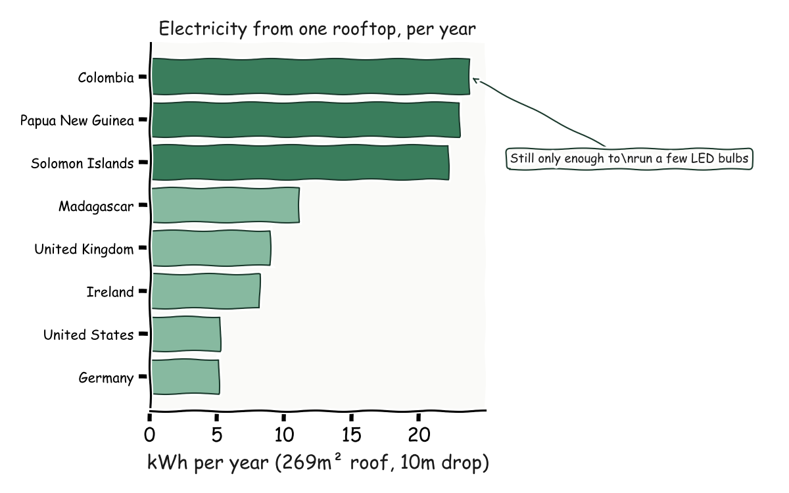
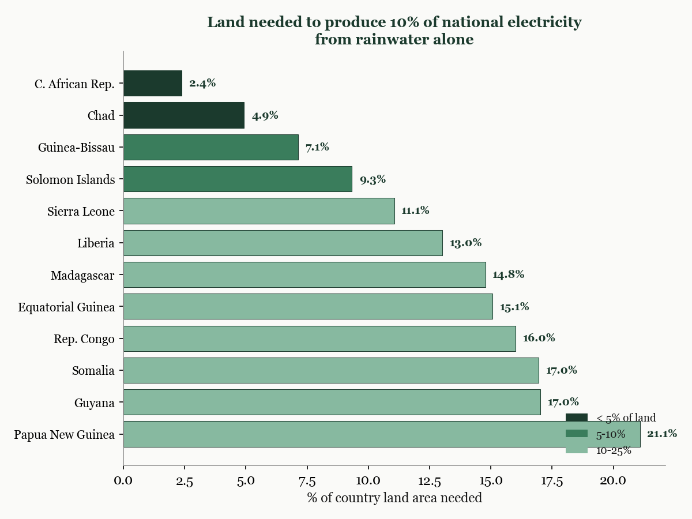
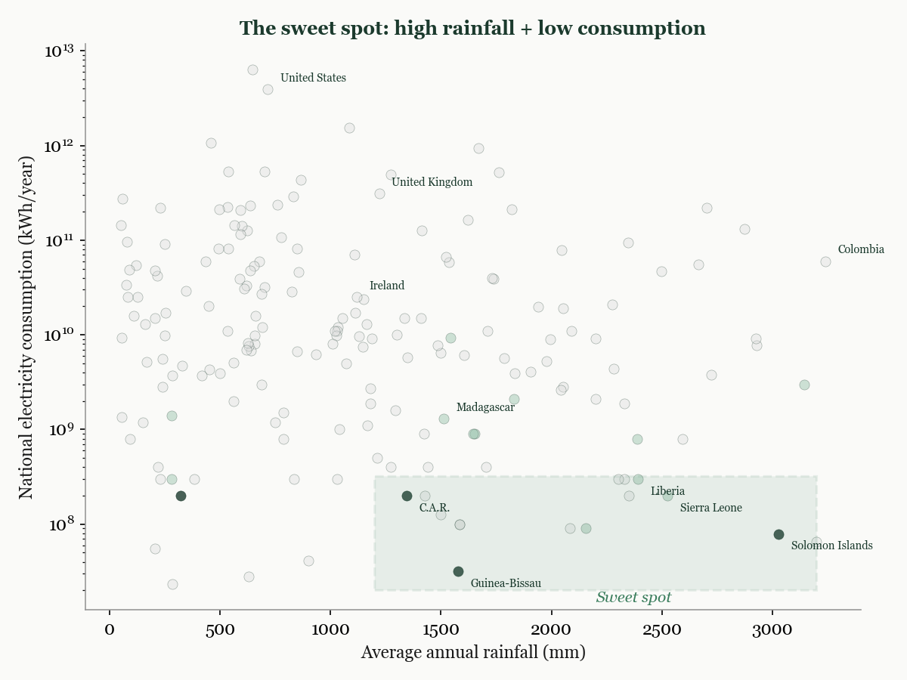
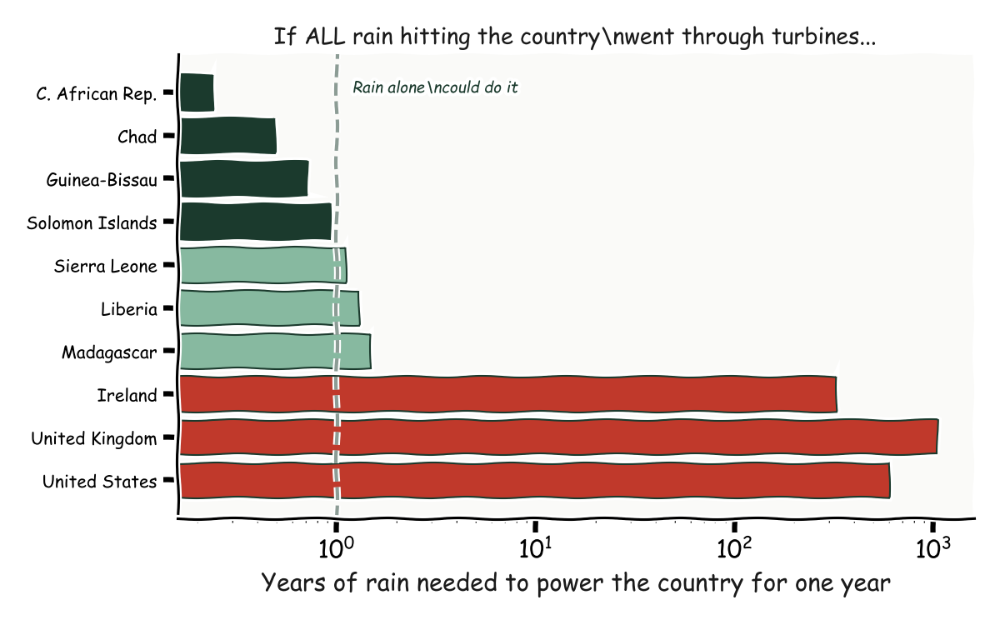
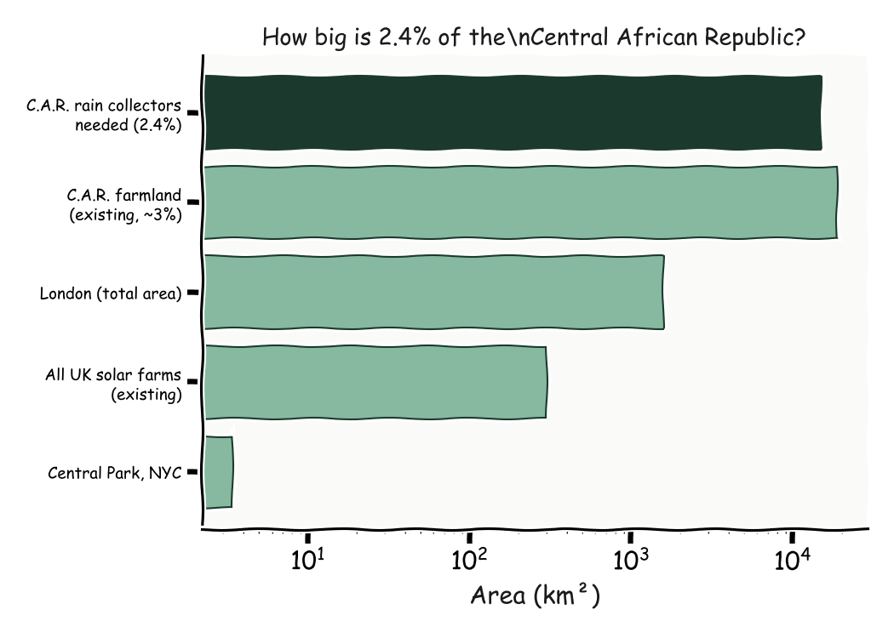

Late one night I watched a video of someone generating electricity from rainwater collected off his roof. It was a tiny amount of power, barely enough to light a single LED. But it got me thinking. What if you scaled it up? Not one roof, but every roof in a country? Not a hobby project, but a national infrastructure question?
It sounds absurd. And for most of the world, it is. But when you actually run the numbers, a handful of countries land in a sweet spot where the arithmetic is surprisingly close to working.
The energy in falling water depends on three things: how much water, how far it falls, and how efficiently you capture the energy. The formula is high-school physics: mass times gravity times height. For a single roof, I assumed a generous 269 square metres of collection area and a 10-metre drop through a micro-turbine. That gives you the maximum energy available from every drop of rain that lands on your roof in a year.
For a single house, even in the wettest places on Earth, the result is underwhelming. The Solomon Islands, with over 3,000 millimetres of rain per year, would generate roughly 22 kilowatt-hours from one rooftop. That is enough to run a few LED bulbs. Colombia, one of the wettest countries on the planet, manages about 24 kWh. Your phone charger uses more than this in a year.

This is where most people would stop. A single roof cannot power a house from rain. The idea is dead.
The interesting question is not whether one roof can power one house. It is whether the total rain falling on a country, collected and channelled through turbines at scale, could contribute meaningfully to that country's electricity supply.
This reframing changes everything. The denominator is no longer household consumption. It is national electricity consumption. And some countries consume very little electricity. The Central African Republic uses about 200 million kWh per year, roughly what a single large data centre consumes. Guinea-Bissau uses even less: 32 million kWh.
When you divide the total energy available in a country's rainfall by its total electricity consumption, a pattern emerges. For the Central African Republic, the rain falling on just 2.4% of the country's land area, collected and passed through turbines, could produce 10% of the nation's electricity. Guinea-Bissau needs 7%. The Solomon Islands need 9%.

The countries where this works share two characteristics: high rainfall and low electricity consumption. Neither alone is sufficient. Colombia has extraordinary rainfall but consumes too much electricity for rain to make a dent. Chad has very low consumption but not enough rain. The sweet spot sits in the bottom-right corner of a scatter plot: lots of rain, very little demand.

The most extreme case is the Central African Republic. If you could collect all the rain falling on the entire country and run it through turbines, you would generate enough electricity in just three months to power the country for an entire year. For Guinea-Bissau, it takes about eight months. For the Solomon Islands, eleven.

Compare that to Ireland, which would need 325 years of accumulated rain to power one year of electricity. Or the United Kingdom at over a thousand years. The gap is not about rainfall. It is about how much energy the country consumes.
Not really. Covering 2.4% of the Central African Republic in rain collectors sounds small as a percentage, but it is nearly 15,000 square kilometres, roughly ten times the size of London. The infrastructure cost would be extraordinary. Micro-turbines at this scale do not exist. Seasonal variation in rainfall means the supply would be inconsistent. And the same land area covered in solar panels would generate far more electricity.

But that misses the point of the exercise.
The value of this analysis is not a policy recommendation. It is a demonstration of what happens when you take a seemingly absurd question and follow the arithmetic to its conclusion.
The per-house calculation kills the idea immediately. One roof, one turbine, no meaningful power. Stop there and you learn nothing. But widen the frame to the country level, introduce a second variable (national electricity consumption), and a pattern appears that was invisible at the smaller scale. The idea does not work everywhere, but it works somewhere, and the reason it works is not what you would guess. It is not about the wettest places. It is about the intersection of rainfall and demand.
That pattern, the sweet spot that only appears when you cross two variables against each other, is the kind of insight that data analysis exists to find. Most of the time the answer is "no, this does not work." But occasionally the answer is "no, except here, and the reason is interesting." Those are the findings worth chasing.